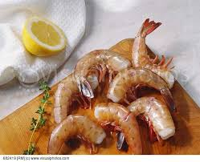
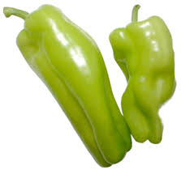

Ingredients:
- Large yellow onion
- 2 jalapeno peppers
- Habanro pepper
- 4 hot italian peppers
- 3 lbs shrimp (cleaned)
- 1 jar of whole peeled tomatos
- Salt and black pepper
- Olive oil
Recipe:
- Clean out hot italian peppers, keeping them whole, and cover in olive oil. Broil in oven until golden
- Slice onions and all peppers (save pepper seeds to add in later)
- Heat large pot, add in peppers in onion. Cook until they all soften
- Crush whole peeled tomates by hand in a bowl, and add to the pot
- Bring pot to boil, then add in salt, black pepper, and extra pepper seeeds to taste
- Once desired heat is achived, add in cleaned shrimp and leave on heat until the shrimp are fully cooked
Can place over long pasta, or enjoy on its own
Shrimp Fra Diavalo History
A version of this dish was always cooked on Christmas Eve. Over the years as Mike took over cooking for Christmas Eve dinner, he started to iterate on the classic to make it his own.